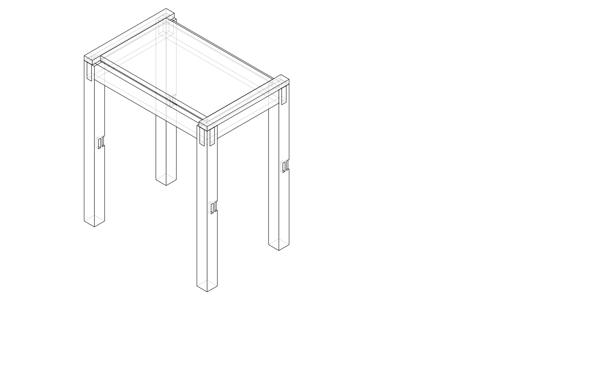
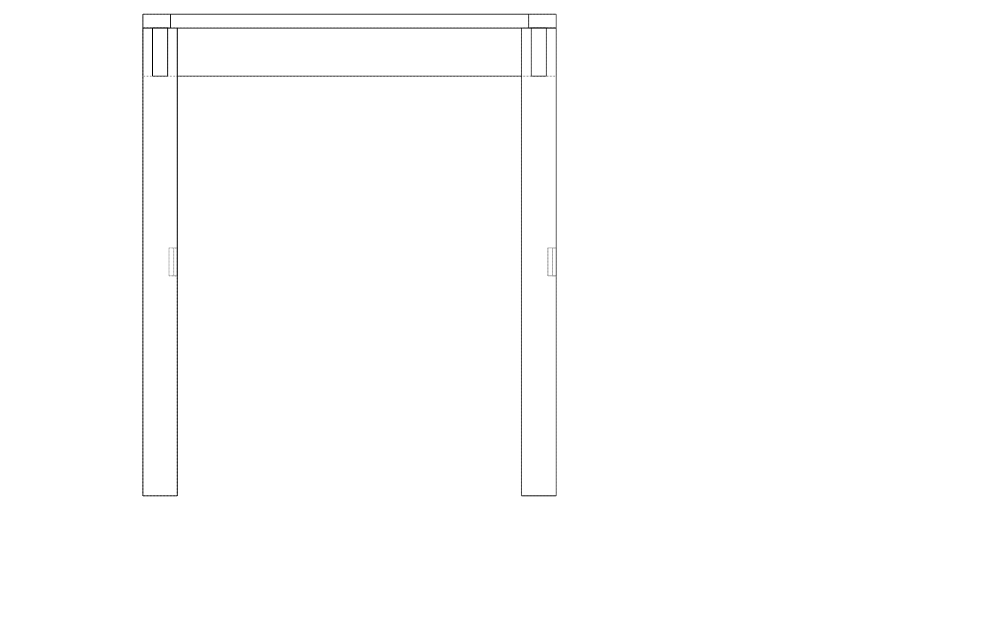
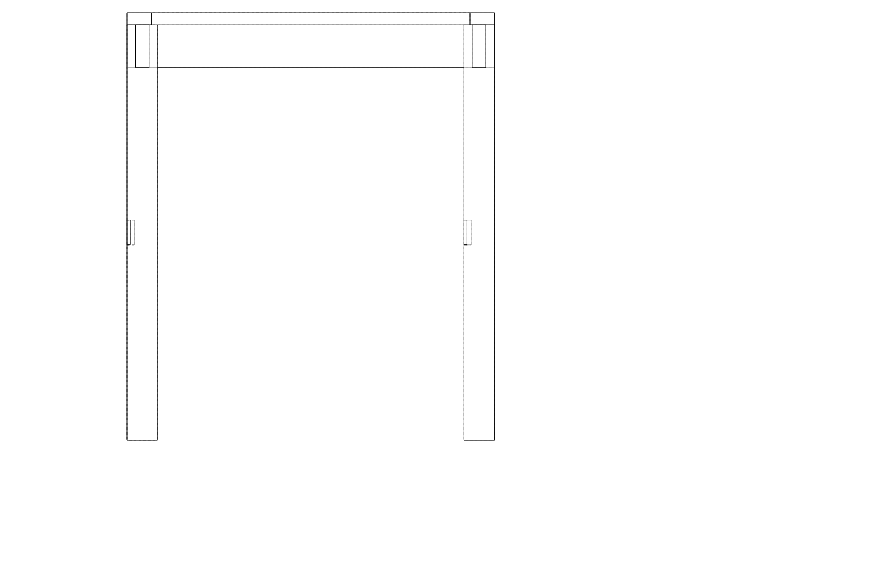
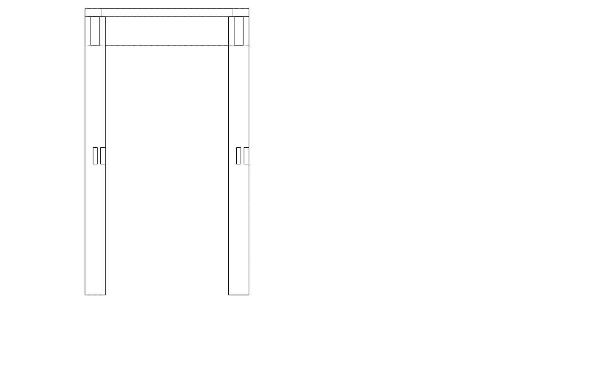
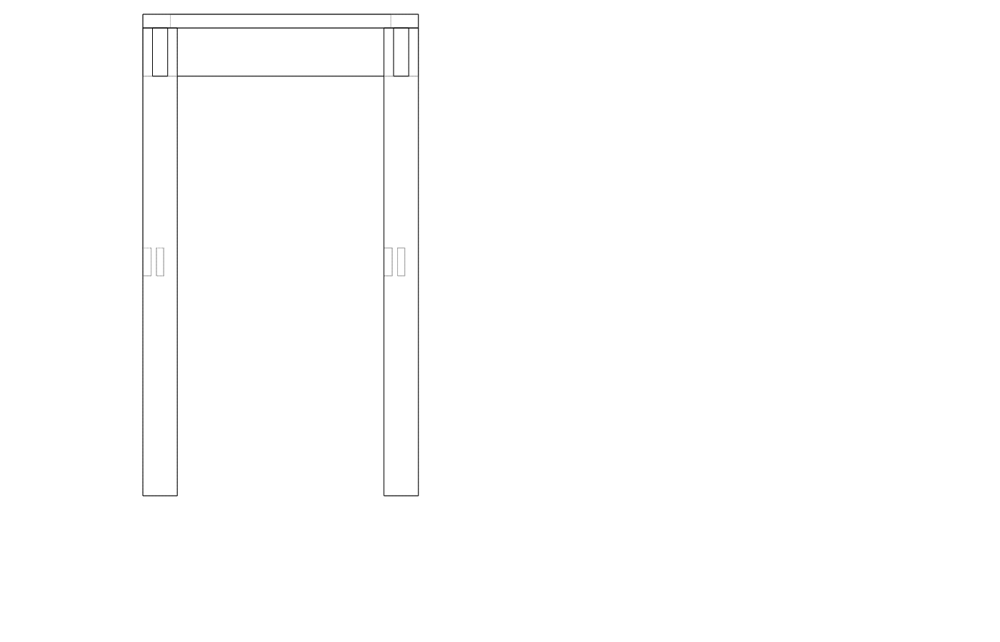
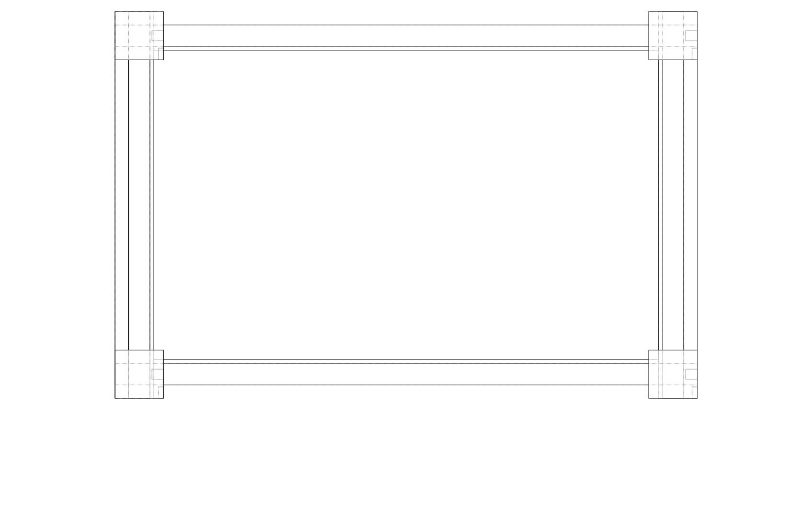

| Item | Qty | Unit | Unit price | Subtotal |
|---|---|---|---|---|
| Cedar 50x50mm × 750mm (legs) | 4 | length | $12.00 | $48.00 |
| Cedar DAR 70x22mm × 700mm (aprons) | 4 | length | $8.00 | $32.00 |
| Cedar solid board 140x20mm × 600mm (top boards) | 3 | length | $14.00 | $42.00 |
| Cedar DAR 40x20mm × 400mm (breadboard ends) | 2 | length | $6.00 | $12.00 |
| Pipe clamps × 2 (hire or buy) | 2 | piece | $18.00 | $36.00 |
| Exterior PVA glue | 1 | bottle | $7.00 | $7.00 |
| Pocket-hole screws + buttons (top fixing) | 1 | pack | $9.00 | $9.00 |
| Outdoor timber oil 500mL | 1 | tin | $28.00 | $28.00 |
| Total | $214.00 | |||
| Part | Qty | L (mm) | W (mm) | T (mm) | Notes |
|---|---|---|---|---|---|
| Leg | 4 | 680 | 50 | 50 | LEG_H = TABLE_H − TOP_T |
| Long apron | 2 | 600 | 70 | 22 | Full outer width; tenons on ends |
| Short apron | 2 | 400 | 70 | 22 | Full outer depth; tenons on ends |
| Top board | 3 | 520 | 140 | 20 | Edge-joined to ~400 mm wide |
| Breadboard end | 2 | 400 | 40 | 20 | Cross-grain, slotted screws |
Prepare top boards. Flatten one face and joint one edge on each of the three top boards. Aim for square, gap-free mating edges — hold two boards together and look for light through the joint. A well-set hand plane removes high spots; aim for 0 gap over the 520 mm length.
Glue up top panel. Apply PVA to all mating edges. Clamp with two pipe clamps perpendicular to the boards (one each side of centre), cauls on top and bottom to prevent bowing. Tighten clamps evenly. Let cure overnight.
Flatten and trim panel. Once cured, scrape or plane off squeeze-out. Flatten the face with a hand plane or belt sander. Trim panel to final 520 × 360 mm (length between breadboard ends, width after joining).
Fit breadboard ends. The centre 50 mm of each breadboard is glued and screwed; the outer 75 mm each side is only screwed through a slot (5 mm slot in the breadboard, screws not glued). Drill centre pilot hole. Rout or chop a 5 mm × 20 mm slot at each outer fixing. Glue and screw centre only; drive screws into slots without glue.
Mark and cut leg mortises. On the inner face of each leg, mark two mortises (one per apron face): 10 mm wide × 40 mm tall, centred at mid-apron height, set back 5 mm from leg end. Chop to 12 mm depth with mortise chisel.
Cut apron tenons. Mark tenon shoulders at distance = leg width (50 mm) from each end. Tenon is 10 mm thick × 40 mm tall, centred on the 70 mm apron height. Saw cheeks and shoulders; pare to fit. Tenons should be snug but push fully home with hand pressure.
Dry-fit frame. Assemble all four legs and four aprons without glue. Check all shoulders pull up tight. Measure diagonals — equal diagonals = square.
Glue up frame. Glue apron tenons into two opposite legs first (one end frame). Clamp and check square. After 2 h, glue in remaining two aprons and clamp across the full frame. Let cure overnight.
Fix top to frame. Rout or chop a 5 mm groove on the inside top face of each apron. Cut wooden buttons from scrap: ~30 mm long, 5 mm step that hooks into the apron groove. Screw buttons upward into the top underside — they can slide in the groove as the top moves seasonally.
Sand and finish. Sand frame to 120 grit, top to 180 grit. Apply two coats outdoor timber oil; allow to cure between coats.